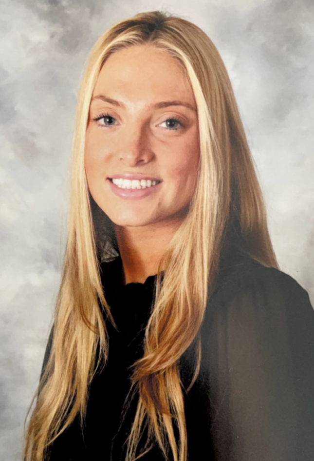

Abigail Weltman
I am a student at the University of Maryland persuing a degree in Journalism and Buisness. I enjoy writing, public speaking, graphic design, business and networking. I discovered that these skills could lead to a plethora of careers I’m interested in exploring.

Intern
Association of Luxury Suite Directors
May 2022-August 2022
- Strategized and collaborated with board members on creating a schedule for buy-seller networking meetings.
- Became familiarized with company software to register attendees for the trade show and monitored memberships
- Assisted on tours and oversaw cohesiveness of the show's seminar schedule.
VP of Social/Risk Responsibility (Executive Board)
Alpha Epsilon Phi
November 2021- November 2022
- Formulate and implement chapter procedures for 200+ members to ensure adherence to national guidelines
- Attend bi-weekly meetings with university representatives to discuss and construct security plans to improve campus safety
- coordinated and created social events to create relationships with other greek chapters on campus.
Staff Writer
The Campus Trainer
August 2021- January 2021
- Ascertained quantitative trend research for multiple global issues to then be converted into compelling articles
- Investigated and researched breaking news at the university level through interviewing 30+ subjects
- Consistently met all deadlines while performing with the highest degree of accuracy in a fast paced environment
University of Maryland in College Park
- Bachelor of Science Journalism
- Graduating May 2024
- Minor: General Business
- Presidential Scholarship
COMPUTER SKILL LEVEL
Certified: Adobe Photoshop, Adobe Lightroom
Proficient: Adobe Illustrator, Microsoft Excel, Microsoft PowerPoint